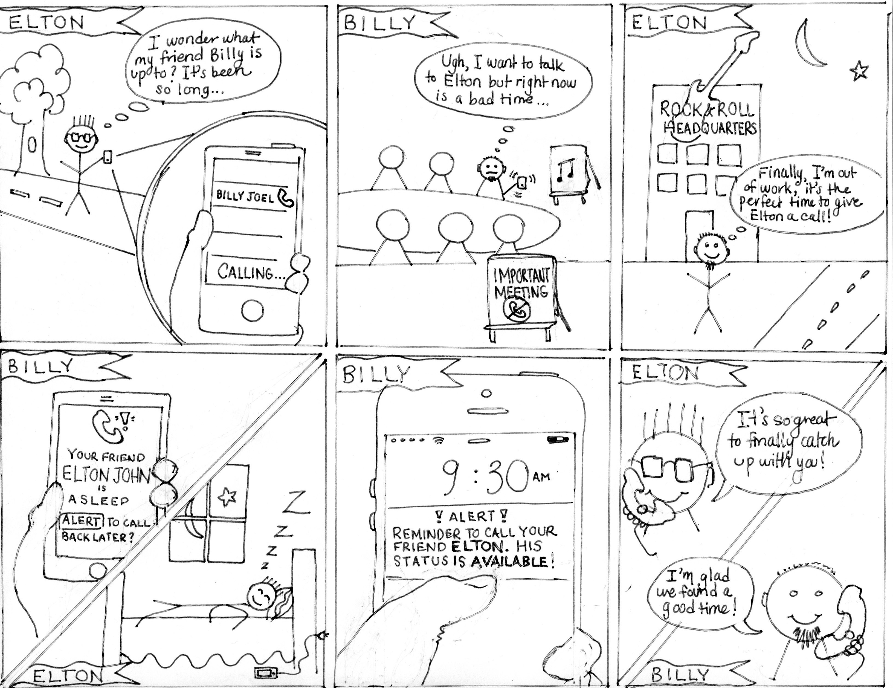
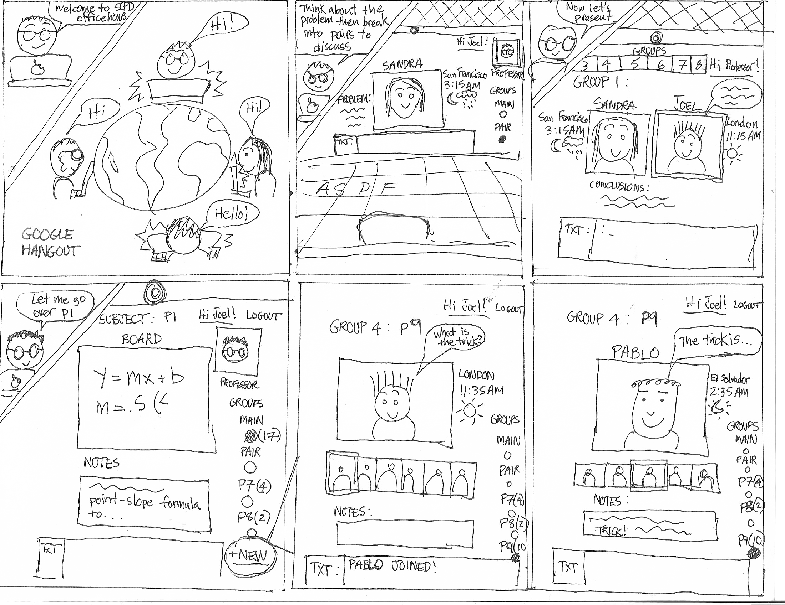
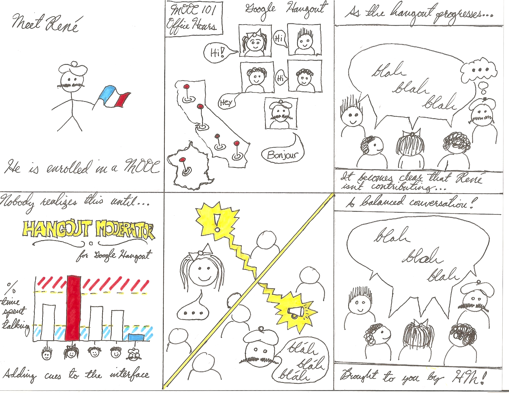

After receiving feedback from Jofish and John during class on Thursday, April 17, we reassessed our originally proposed ideas from Milestone 1 in a second brainstorming session. Since most of our initial ideas were not viable as final project ideas, we came up with two new ideas with a focus on the social dynamics in MOOCs (Massive Open Online Courses). In particular, we are interested in understanding and improving the ways in which students and instructors can interact with one another through videoconferencing software like Google Hangouts, and how the affordances of that platform can improve the learning experience between distributed peers. In addition to the two new MOOC/Hangout focused ideas, we iterated upon one of our originally proposed ideas on sensing availability and contacting friends.



Characters:
Kyle Dumovic as Elton John
William Chidyausiku as Billy Joel
Julia Cambre as Narrator
-- MEETING SCENE --
K: [Whistling] I wonder how my friend Billy is doing, why don’t I give him a call? [Calls]
W: [Play ringtone. Acts like he’s in a meeting, sitting, silences his phone]
W: I really want to catch up with my friend Elton, but I’m in an important meeting right now!
K: [Looks sad]
-- SLEEP SCENE --
K: [Switches spots with Will to be sitting in the chair]
K: It’s been weeks since I’ve had a good night of sleep
W: What a long day of work, what a perfect opportunity to catch up with Elton
K: [Wakes up. Looks flustered]
J: FREEZE!!!! Let’s try that again! [Hands them new phones]
-- BACK TO MEETING SCENE --
K: [Whistling] I wonder how my friend Billy is doing, why don’t I give him a call? [Calls]
J: I checked your friend Billy’s Google Calendar and is in a meeting at the moment. His next availability is three hours from now. Would you like me to schedule a reminder to call him back then?
K: Yes thank you. [Hangs up]
J: Three hours later!
K: A notification! Yeah, I should totally call Billy!
W: Elton, is that really you?
J: "At the Moment," your personal communication secretary!